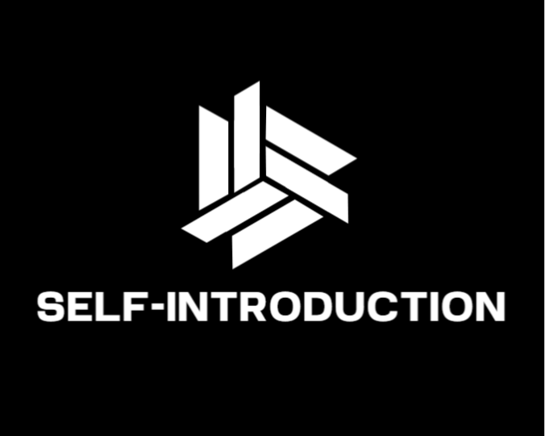
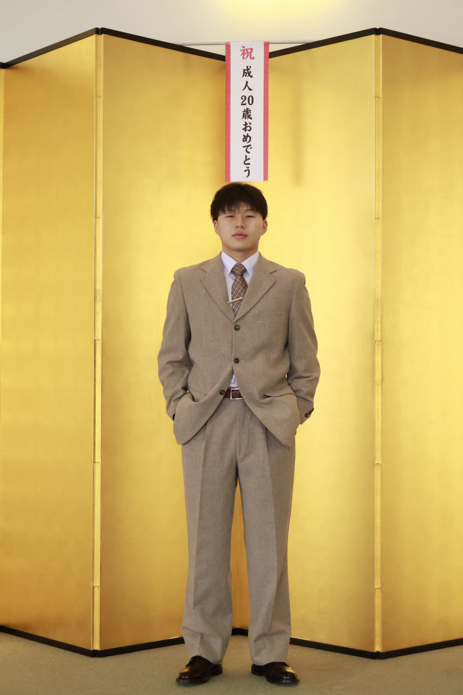
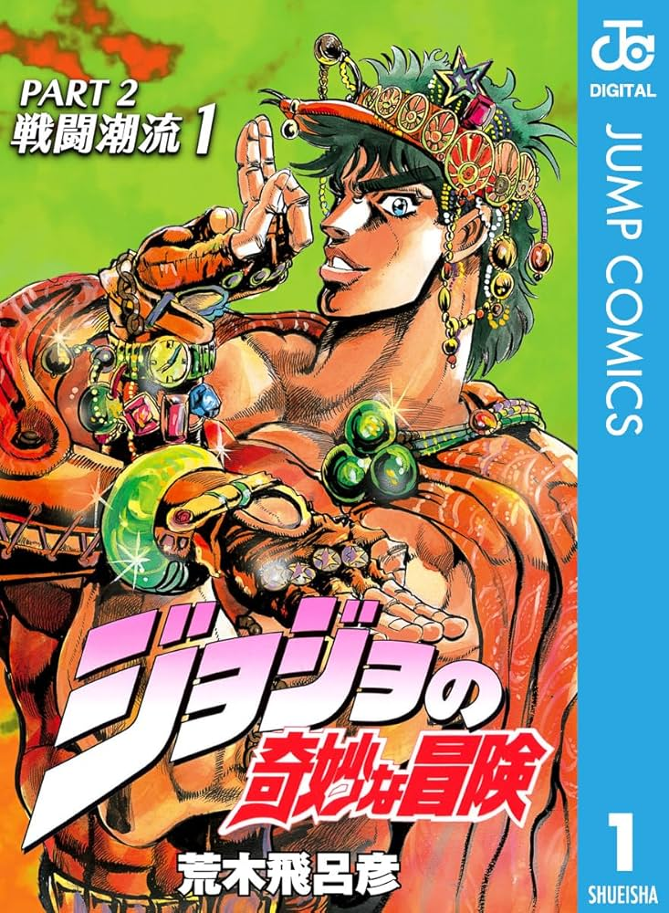
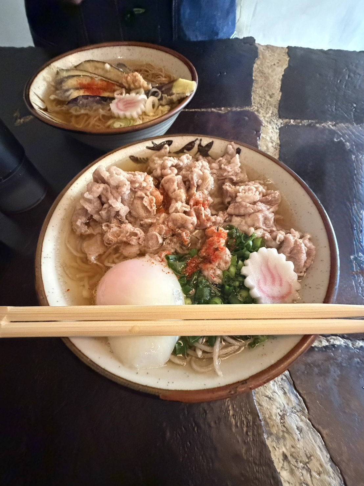

SELF-INTRODUCTION
北九州市立大学 / 情報システム工学科
Yuto Fujii — 藤井勇士
福岡出身の大学3年生。情報システム工学を学びながら、旅・アニメ・うどんをこよなく愛する。 ものづくりで誰かの心を動かすことを目指しています。

Nickname
ケーノ
Based in
北九州
About Me
2005
福岡県に生まれる
2024
北九州市立大学 情報システム工学科 入学
現在
プログラミング・Web制作を学習中
2005年10月10日生まれ、福岡県出身の大学生。 北九州市立大学 国際環境工学部 情報システム工学科3年生。
ニックネームの由来は「ふじさん」で登録しようとしたら先代が使用済みだったため、 ふじさん → 活火山 → アクティブボルケーノ → ケーノという経緯で生まれました。
日々プログラミングと向き合いながら、旅行やアニメ、うどんを通じて人生を満喫中。 技術で誰かの日常を少し豊かにできるものを作りたいと思っています。
3
学年
∞
うどんへの愛
1
海外渡航（ロンドン）
2h
週末のアニメ視聴時間
My Skills
🎨
Tailwind CSS
スタイリング
⚛️
Next.js
学習中
🐙
Git / GitHub
バージョン管理
🎬
Premiere Pro
動画編集
My Interests
✈ Travel
大阪・京都・ロンドンへの旅。食と建築を求めて。
クリックで詳細 →

🎌 Anime
ジョジョの奇妙な冒険とドクターストーンが特に好き。
クリックで詳細 →

🍜 Food
うどんはこの世の最高傑作。ごぼう天うどん最高。
クリックで詳細 →
My Works
Web
HTML・CSS・Tailwind CSSで制作したポートフォリオサイト。ダークトーンと和の雰囲気を意識したデザイン。
大阪や京都によく行きます。おいしい食べ物を食べたり、歴史的な建築物を見たりするのが好きです。 海外は一度だけロンドンに行きました。ハロッズのデパートや街並みがとても印象的で、 ご飯もおいしかったし、建築も素晴らしかったです。また海外に行きたい！
アニメは特にジョジョの奇妙な冒険とドクターストーンが好きです。 どちらも独特の世界観と魅力的なキャラクターが特徴で、ストーリーも非常に引き込まれます。 ジョジョはスタイリッシュなアートと独創的な能力バトルが魅力。 ドクターストーンは科学をテーマにした斬新なストーリーが面白い！
うどんがこの世の中で一番好きな食べ物です。 うどんのシンプルな美味しさと、出汁の深い味わいが大好きです。 特に、福岡のごぼう天うどんや、香川の讃岐うどんが好きで、 食べるたびに幸せな気持ちになります。麺のコシと出汁の風味をじっくり味わうのが至福の時間。